El cáncer es un problema de salud mundial
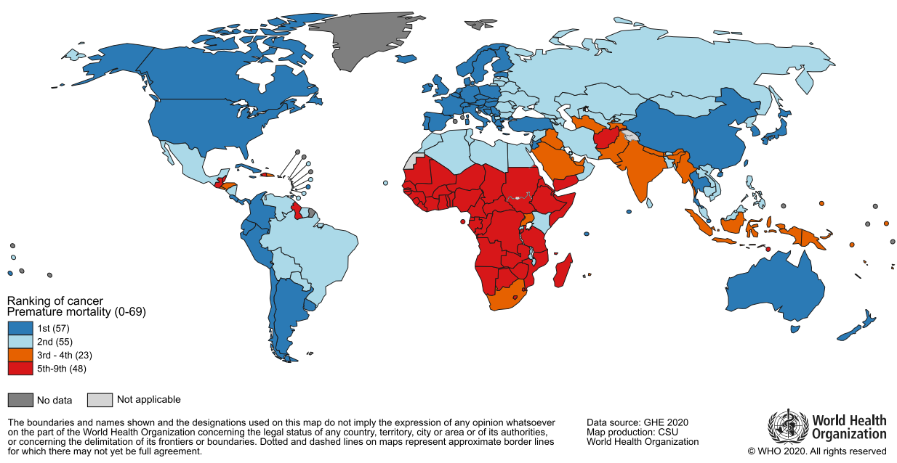
El cáncer es un problema de salud mundial
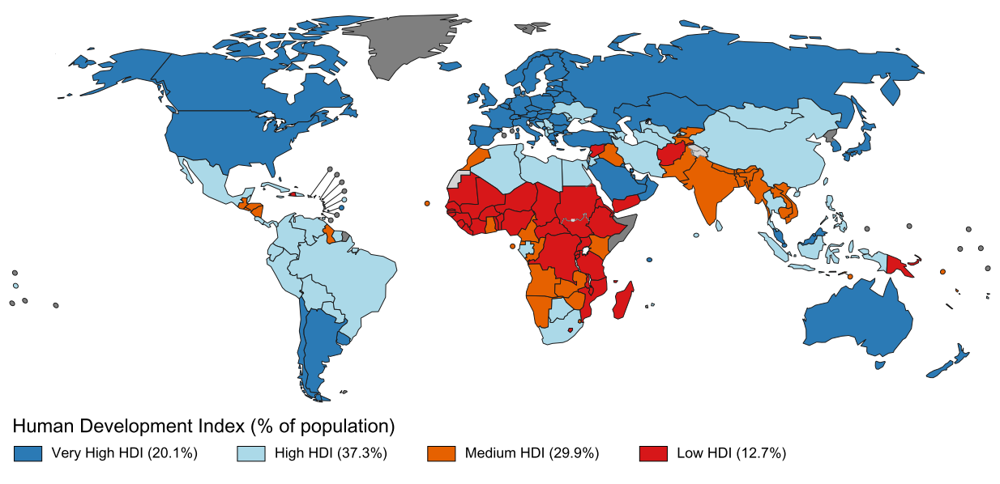
El cáncer es un problema de salud mundial
Transición epidemiológica
El cáncer es un problema de salud en México
El desarrollo de un tumor está dirigido por versiones
desreguladas del programa transcripcional
operando dentro de las células de cáncer
El desarrollo de un tumor está dirigido por versiones
desreguladas del programa transcripcional
operando dentro de las células de cáncer
Signos distintivos del cáncer
Aunque es un proceso multifacético y heterogéneo, existen características
comunes en el desarrollo de tumores
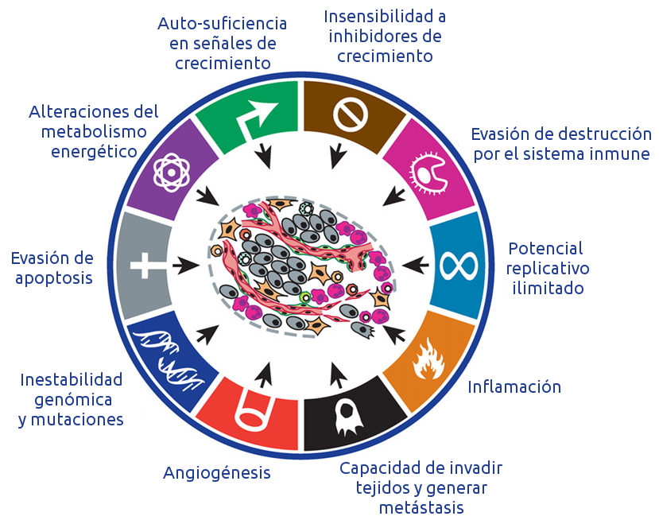
Hanahan and Weinberg.Hallmarks of cancer: the next generation. .
Cell, 2011.
El desarrollo de un tumor está dirigido por versiones
desreguladas del programa transcripcional
operando dentro de las células de cáncer
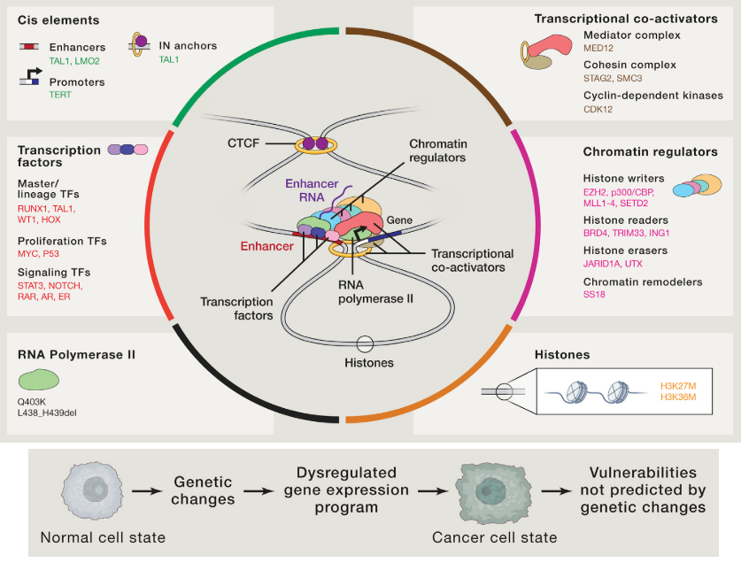
Bradner JE, et al. Transcriptional addiction in cancer.
Cell, 2017.
Nos enfocamos en el transcriptoma porque:
-
Es el resultado medible de muchos mecanismos regulatorios.
-
Está asociado con la estructura y función celular.
-
Puede ser comparado entre diferentes fenotipos.
-
Existen datos públicamente disponibles.
Biología de sistemas
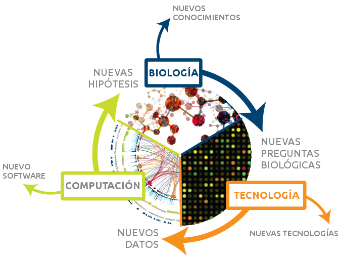
Es un enfoque multidisciplinario y colaborativo que utiliza herramientas computacionales y matemáticas para
para analizar y modelar sistemas biológicos.
Institute for Systems Biology. What is Systems Biology
Nuestro enfoque: Ciencia de redes
Las redes son un marco conceptual intuitivo para modelar componentes que provienen de datos de tecnologías ómicas.
 Sonawane AR, et al. Network medicine in the age of biomedical big data.
Frontiers in Genetics, 2019
Sonawane AR, et al. Network medicine in the age of biomedical big data.
Frontiers in Genetics, 2019
Nuestro enfoque: Ciencia de redes
Las redes son un marco conceptual intuitivo para modelar componentes que provienen de datos de tecnologías ómicas.
 Sonawane AR, et al. Network medicine in the age of biomedical big data.
Frontiers in Genetics, 2019
Sonawane AR, et al. Network medicine in the age of biomedical big data.
Frontiers in Genetics, 2019
De una matriz de expresión a una red de co-expresión

De una matriz de expresión a una red de co-expresión

De una matriz de expresión a una red de co-expresión

De una matriz de expresión a una red de co-expresión
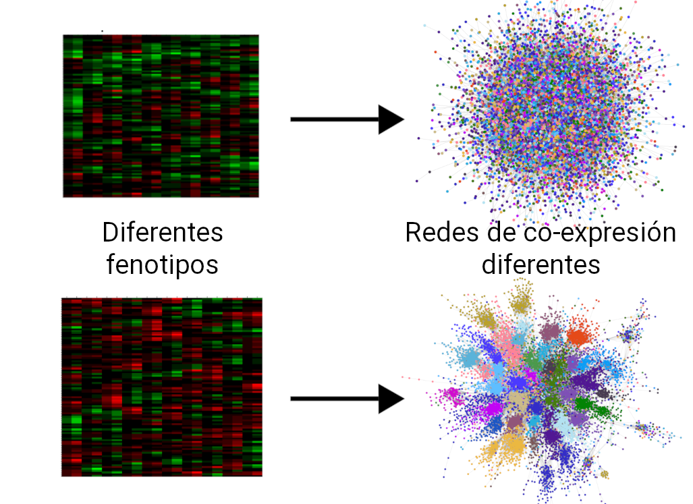
Estudiamos relaciones de alta co-expresión
entre pares de genes porque:
-
Los genes pueden compartir mecanismos regulatorios.
-
Los genes pueden compartir algunas características funcionales.
-
Sin embargo, estas relaciones no representan interacciones físicas o regulatorias.
Utilizamos redes porque:
- Podemos estudiar conjuntos de genes conectados.
- Podemos enfocarnos en las interacciones.
- Podemos analizar patrones globales.

Look at global patterns
Identify network communities: sets of nodes that are densely connected among them
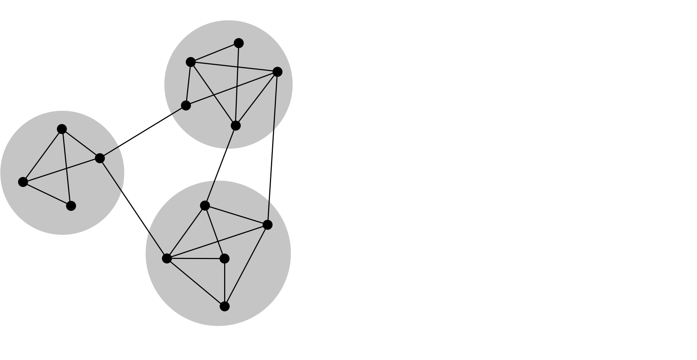
Look at global patterns
Identify network communities: sets of nodes that are densely connected among them
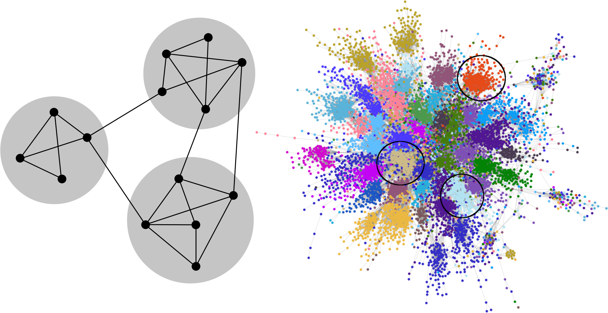
Look at global patterns
Identify network communities: sets of nodes that are densely connected among them
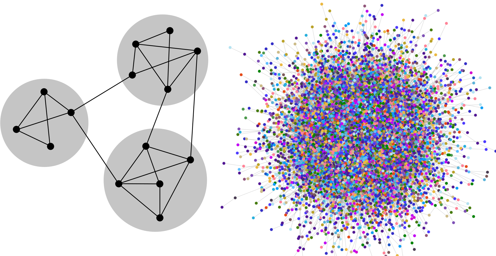
Look at global patterns
Associate network communities with biological processes

En cáncer de mama
 11,675 interacciones (top 0.01% IM). Muestras: 110 normal, 780 cáncer.
Espinal-Enríquez J, et al.
RNA-Seq based genome-wide analysis reveals loss of inter-chromosomal regulation in breast cancer. Scientific Reports, 2017
11,675 interacciones (top 0.01% IM). Muestras: 110 normal, 780 cáncer.
Espinal-Enríquez J, et al.
RNA-Seq based genome-wide analysis reveals loss of inter-chromosomal regulation in breast cancer. Scientific Reports, 2017
En cáncer de mama
 11,675 interacciones (top 0.01% IM). Muestras: 110 normal, 780 cáncer.
Espinal-Enríquez J, et al.
RNA-Seq based genome-wide analysis reveals loss of inter-chromosomal regulation in breast cancer.
Scientific Reports, 2017
11,675 interacciones (top 0.01% IM). Muestras: 110 normal, 780 cáncer.
Espinal-Enríquez J, et al.
RNA-Seq based genome-wide analysis reveals loss of inter-chromosomal regulation in breast cancer.
Scientific Reports, 2017
- There is a loss of inter-chromosomal co-expression in
breast cancer
-
Normal tissue: Interactions from genes in different chromosomes
-
Cancer tissue: Interactions from neighbor genes in the same chromosome
We do not have a molecular mechanism to explain this phenomenon. For now, it is an statistical observation and it will remain as such
until we have an experimental confirmation.
Pregunta de investigación
Si la regulación inter-cromosómica se pierde en
cáncer de mama. ¿Se pierde también en otros tipos de cáncer?
Objetivo General
Evaluar la regulación transcripcional inter e
intra-cromosómica en diferentes tipos de cáncer mediante un enfoque de biología de sistemas.
Metodología

| Tejido |
Muestras |
|
|
Normal |
Cancer |
| Vejiga |
19 |
398 |
| Cerebro* |
88 |
508 |
| Mama |
111 |
1047 |
| Colon* |
163 |
287 |
| Esófago* |
269 |
178 |
| Riñón |
123 |
839 |
| Hígado* |
107 |
358 |
| Pulmón |
101 |
995 |
| Ovario* |
88 |
413 |
| Páncreas* |
165 |
177 |
| Prostate* |
93 |
473 |
| Piel* |
231 |
88 |
| Testículo* |
162 |
138 |
| Tiroides |
56 |
471 |
| Útero |
35 |
591 |
En cáncer, las interacciones de co-expresión más
fuertes son intra-cromosomales
 A diferentes cortes de valores más altos de IM, la fracción de pares intra-cromosomales permanece estable en
tejidos normales, pero no en cáncer.
A diferentes cortes de valores más altos de IM, la fracción de pares intra-cromosomales permanece estable en
tejidos normales, pero no en cáncer.
La prueba de Kolmogorov-Smirnov indica que la distribución de fracciones
intra-cromosomales en los fenotipos es significativamente diferente hasta los 1e+6 valores más altos de IM.
En cáncer, las interacciones de co-expresión más
fuertes son intra-cromosomales
 A diferentes cortes de valores más altos de IM, la fracción de pares intra-cromosomales permanece estable en
tejidos normales, pero no en cáncer.
A diferentes cortes de valores más altos de IM, la fracción de pares intra-cromosomales permanece estable en
tejidos normales, pero no en cáncer.
La prueba de Kolmogorov-Smirnov indica que la distribución de fracciones
intra-cromosomales en los fenotipos es significativamente diferente hasta los 1e+6 valores más altos de IM.
En cáncer, hay un decaimiento de los valores de co-expresión que depende de la distancia entre pares de genes
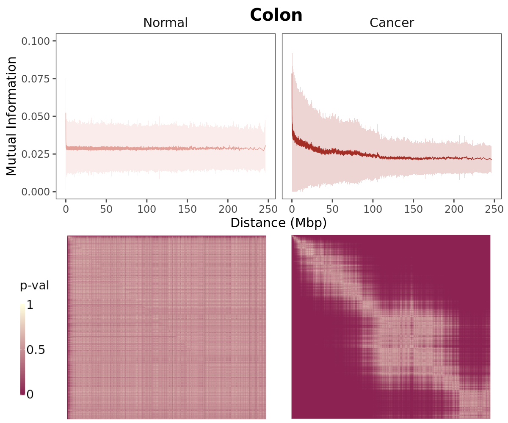
Los pares de genes se ordenaron en términos de su distancia y se observa el promedio de valores de IM para
conjuntos de mil interacciones.
Se utilizaron pruebas de Wilcoxon rank-sum para comparar las distribuciones
entre conjuntos.
Las redes de tejido de cáncer y normal tienen
diferente estructura topológica
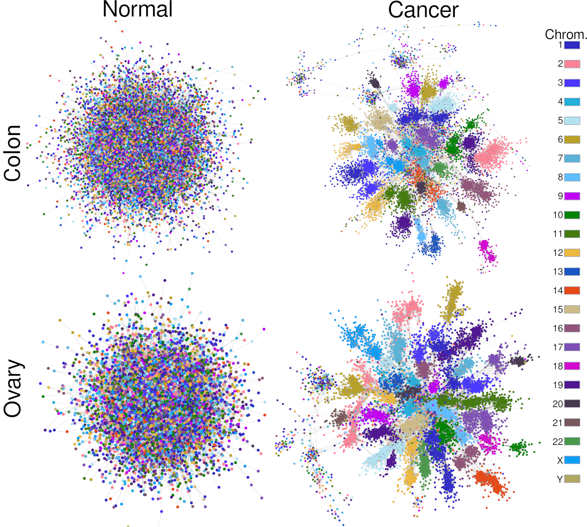
Redes de co-expresión construidas con las 100 mil interacciones de IM más fuertes.
Los genes están
coloreados de acuerdo al cromosoma en el cual se localizan.
La mayoría de interacciones en las redes de tejido normal son únicas
 Veinte conjuntos con el mayor número de interacciones compartidas.
Veinte conjuntos con el mayor número de interacciones compartidas.
Las redes de tejido de cáncer tienen un
menor número de interacciones únicas que las de tejido normal.
Las intersección de las redes de interacciones compartidas contiene genes que codifican para
riboproteínas
 Los genes que codifican para proteínas ribosomales guardan un patrón de alta co-expresión
Los genes que codifican para proteínas ribosomales guardan un patrón de alta co-expresión
entre ellos
en todos los tejidos analizados y en ambas condiciones.
Análisis de redes
- Identificación de comunidades
-
Conjuntos de nodos que están más densamente conectados entre ellos que con el resto de la red.
-
Cálculo de asortatividad promedio por comunidad
- Tendencia de los nodos a conectarse con otros nodos con características similares.
- Asortatividad cromosomal: Para cuantificar la tendencia de una comunidad hacia un solo cromosoma.
- Asortatividad de expresión diferencial: Para cuantificar la tendencia de una comunidad hacia una dirección en
expresión diferencial.
-
Análisis de sobre-representación de procesos de Gene Ontology
- Para identificar procesos biológicos potencialmente asociados a cada comunidad.
Distribución de asortatividad cromosomal en las
comunidades de las redes
 Esta característica resume el fenómeno:
Esta característica resume el fenómeno:
en tejido normal hay una fuerte tendencia
hacia las interacciones inter-cromosomales,
mientras que las comunidades
en redes de cáncer están compuestas principalmente por
interacciones intra-cromosomales.
Procesos biológicos comunes en las redes de cáncer
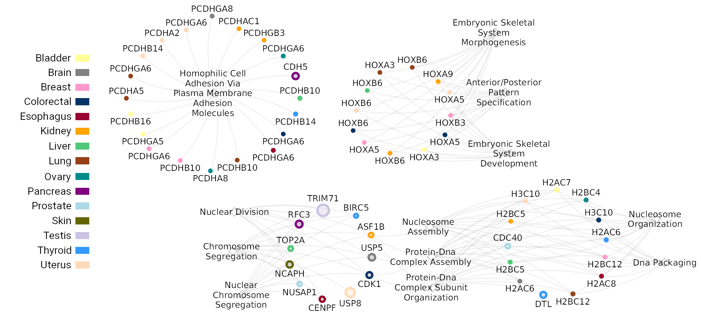
Red bipartita: comunidades - procesos de GO
Nombre de la comunidad: Gen con mayor valor de page-rank
Estos conjuntos de genes guardan alta co-expresión en múltiples tejidos de cáncer (> 10).
There are two connected components missing from this figure: the one
associated with ribosomal genes and another one associated with adaptive immune
response
Procesos biológicos asociados a redes de
tejido normal
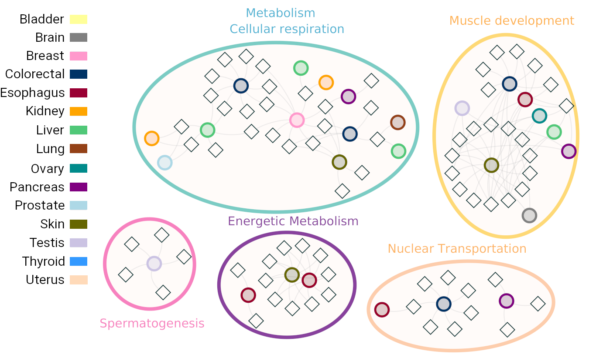
Red bipartita: comunidades - procesos de GO
Nombre de la comunidad: Gen con mayor valor de page-rank
Procesos necesarios para el mantenimiento celular.
Procesos biológicos asociados a redes de
tejido de cáncer

Red bipartita: comunidades - procesos de GO
Nombre de la comunidad: Gen con mayor valor de page-rank
La pérdida de co-expresión inter-cromosomal no se observa en otras enfermedades
crónico-degenerativas
 Redes con 100 mil interacciones construidas con la misma metodología.
Redes con 100 mil interacciones construidas con la misma metodología.
Conclusions
- Co-expression networks, infered from RNA-seq data allow us to study significant transcriptome associations
- There is a loss of long range co-expression in cancer
-
Normal tissues: Interactions from genes in different chromosomes
-
Cancer tissues: Interactions from neighbor genes in the same chromosome
- Network topology display phenotype-associated functional features
- Network topology is different for two different
conditions: normal and cancer
- The loss of long-range co-expression is not present in other chronic degenerative
diseases
- At least, not in Type-2 Diabetes or Alzheimer's disease
Conclusions
- The loss of inter-chromosomal co-expression and the loss of long-range co-expression are
consistent, measurable and reproducible features present in all of the studied profiles
-
There is a global alteration of the interactions in the transcriptome
-
Shorter distances are proferred
-
There is a contribution of multiple altered regulatory mechanisms
-
Its prevalence suggests an enabling feature of the transcriptomal program